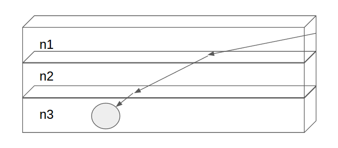
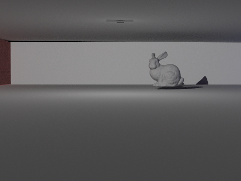
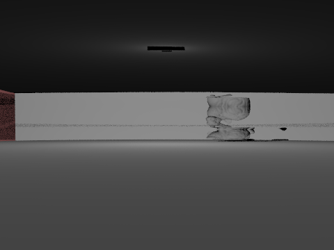
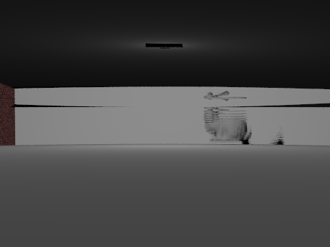
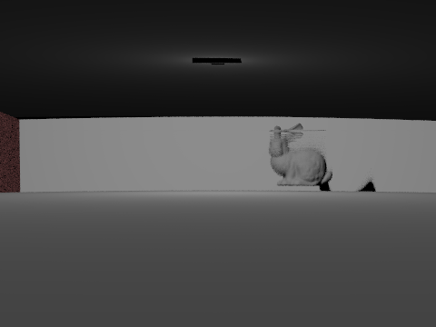
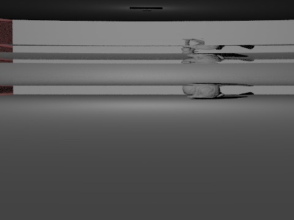

Part I: Implementation of two atmospheric models
1st Model: Index of Refraction changing linearly with height.
Given the maximum and minimum index of refraction and returns a index of refraction through linear interpolation.
2nd Model: Ground as heat source
Treating the ground as a heat source so index of refraction starts at a value determined by temperature of source and converges exponentially to that of air as distance from ground increases.
Part II: Implementation of Non-Linear Raytracing using Slab Method
Models atmosphere as slabs of air. Each slab has a different index of refraction, but all air inside the same slab is assumed to have the same index of refraction. Clearly not 100% accurate but can be good enough for certain scenes, depending on how many slabs are chosen.
Given information of the incoming ray (including both origin and direction), we can determine the intersection of the ray and the slab and the refractive direction using Snell's Law.
|

|
Constant Index of Refraction

|

|
Theoretically these should be showing the same image. However, we have found that with the increase of the number of slabs, the dimmer the image seems to be. This is an artifact that we need to fix. It could easily have something to do with floating point error.
Increasing Index of Refraction
|

|

|

|
These images are rendered using an atmosphere with linearly changing index of refraction. At the bottom of the scene the refraction index is 1 and at the top it is 1.01. This change is actually higher than you would expect in real life situations, but it provides a useful demonstration. Note how the number of artifacts drastically decreases as the number of slabs is increased. Our goal is to quantify how realistic these images are and the amount of artifacts in them, and try and decrease that error as much as possible in the coming week.
Decreasing Index of Refraction
|

|

|

|
These images are rendered using an atmosphere with linearly changing index of refraction. At the bottom of the scene the refraction index is 1.01 and at the top it is 1. Once again, this change is higher than you would expect in real life situations, but it provides a useful demonstration.
Part III: Reflect on Progress With Plan
Our plan by this week is to finish implementing mirages and Fata Morgana using the slab method. We have accomplsihed slab method and rendered images successfully with indoor lighting. Yet, there are still bugs for environmental lighting which we need to fix. In addition to implementing slab method, we added two different atmospheric models. This is an additional implementation compare to our schedule.
Out immediate next steps are as follows:
1. Fix non-linear ray-tracing for environmental lighting
2. Implement Euler's Method
3. Placing heat sources at different locations of the scene
4. If time allows, create different atmospheric models and compare differences
Milestone VideoPresentation Slides Linking Test